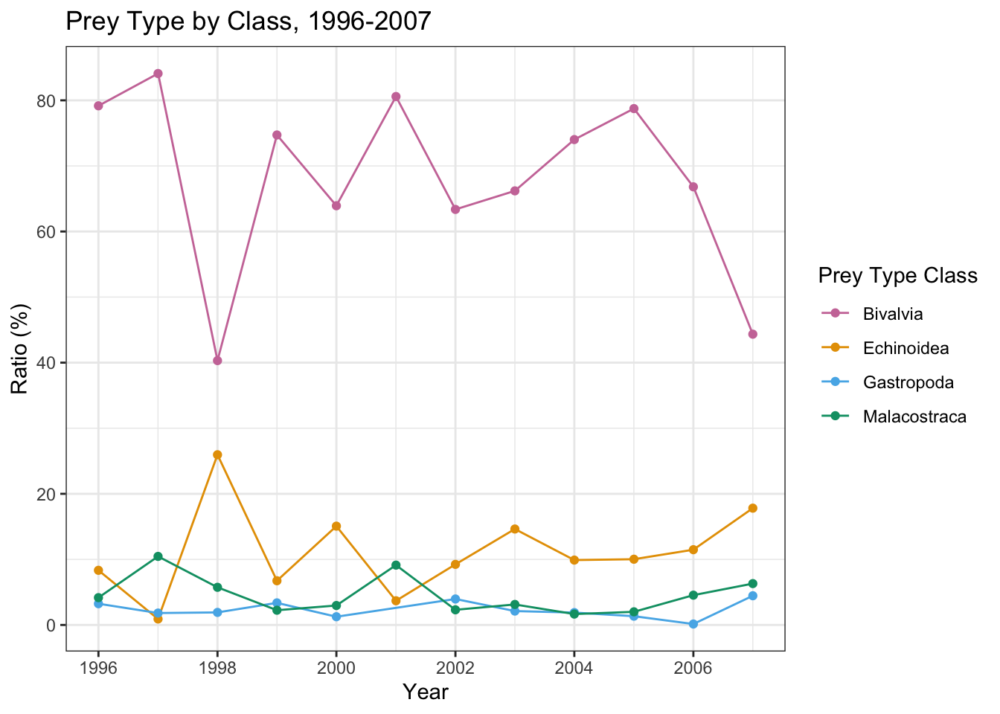

# requiring packages
require(tidyverse)
require(lubridate)
require(viridis)
require(sf)
require(leaflet)
require(gridExtra)
require(FSA)
require(MASS)
require(AICcmodavg)Foraging Behaviors of Enhydra lutris
1: Data wrangling and explanation
Project Overview
Once ubiquitous along the North Pacific coasts, the sea otter (Enhydra lutris) is one of the smallest marine mammals and serves as a keystone species in the environments it inhabits. Sea otter predation on certain sea floor organisms like sea urchins can have cascading effects on the wider ecosystem: as sea otters maintain downward pressure on sea urchin populations, healthy kelp forests are able to thrive as important CO2 sequesters providing habitat and nutrients for a more diverse marine ecosystem.1
Sea otters were hunted to near extinction prior to the 20th century leading to their international protection in 1911 under the North Pacific Fur Seal Convention. Recovery of the species to prior population levels in their former habitats has not been immediate. Glacier Bay in southeastern Alaska is no exception though recent population growth has been significant. In 1993 the sea otter population in Glacier Bay consisted of just five animals. In 2012, that number had grown to 8,508 both from in-group reproduction and immigration of new animals.2 This rapid growth has lead to a number of on-going studies to consider the effects of the sea otter’s return to the Bay. Sea otter foraging behaviors and outcomes have been observed in Glacier Bay National Park and Preserve over several consecutive days each year between 1993 and 2019 as part of the Nearshore Marine Ecosystem Research program at the USGS Alaska Science Center. The objectives of this study have been to:
- Estimate prey species composition, prey number, and prey sizes;
- Estimate forage dive attributes (success, dive times, surface times);
- Estimate energy recovery rates of foraging sea otters;
- Document change in sea otter diet over time.3
Shore-based observers with high power telescopes and 10X binoculars choose a focal otter and record data on a series of that otter’s dives, recording estimated age, sex, pup status, duration of each dive in seconds, and prey type/quantity/size retrieved (if dive was successful). Each observation represents one dive by a focal otter. A series of observed dives for a focal otter represents a bout and receives a unique “bout id.”
With this data, I wanted to ask the following questions:
- For female otters, is there an association between quantity of prey retrieved and whether or not the otter had a dependent pup? My initial prediction is that there is an association between quantity of prey retrieved and the “pup status” of a female otter but whether that is an increase in median prey quantity or a decrease, I am not sure. It’s possible that female otters with pups may take shorter dives since they leave the pup floating on the surface while they search for prey. And depending on whether or not there is a positive association between quantity of prey and duration of the dive, these shorter dives might result in less prey. However, female otters with pups are foraging not just for themselves but for their offspring as well. This might result in a greater median prey quantity retrieved.
- Are there foraging behaviors and outcomes that can tell us about the amount of prey retrieved on a given dive? More specifically, what kind of relationship (if any) is there between the prey type and the amount of prey retrieved? And what relationship might be present between the dive duration and the amount of prey retrieved when looking at the different types of prey retrieved? My prediction is that there will be a relationship between the type of prey retrieved and how much is retrieved in a single dive. Different types of prey will have different average sizes - some bigger, some smaller - which might limit the amount of certain kinds of prey that the otter can bring up in a single dive. While I think dive time might have some impact on the quantity of prey retrieved, I am not sure how strong that impact will be. A longer dive could mean the otter is able to retrieve more prey during that dive but it could also mean the prey was harder to retrieve or more scarce, which would not result in more prey.
Predictor variables examined:
- Pup status for female otters
- Dive time in seconds
- Prey class
Response variables examined:
- Quantity of prey retrieved
Data Wrangling
A few steps of data wrangling were needed for this data before I began running statistical models. The data span the years 1993 to 2019 however, there are years-long gaps that necessitated limiting my data to the span 1996-2007 because it included consecutive years of observations. Next, I had to join the observation data with the more detailed prey type classification legend because the observation data uses three-letter abbreviations for prey type. I then created two separate data frames for use in my analysis:
Pup status data frame: limited to female otters only, removed rows with pup status unknown, created a column to show a simple pup status “yes / no,” and eliminated all rows with NA in the prey quantity column.
Prey quantity data frame: removed all rows with NA in the prey quantity and then dive time columns, filtered prey classification to only those prey types with more than 100 observations recorded.
# Reading in my data sets.
seot <- read.csv("GLBA_SEOT_forage_bouts_1993-2019.csv",
stringsAsFactors = T)
seot_prey <- read.csv("GLBA_SEOT_forage_taxonomy_1993-2019.csv",
stringsAsFactors = T)
# Adding a column for just year and filtering data to consecutive set of years 1996-2007.
seot$bout_date <- ymd(seot$bout_date)
seot$year <- year(seot$bout_date)
seot_07_or_less <- subset(seot, year <= 2007)
seot_96_07 <- subset(seot_07_or_less, year >= 1996)
# Adding a count column to count the number of observations.
seot_96_07$count <- rep(1, nrow(seot_96_07))
# Merging observation data with prey type details.
seot_96_07 <- inner_join(seot_96_07, seot_prey,
by = "preytype_cd")
# Creating a data frame for pup status analysis.
pup_status <- subset(seot_96_07, sex_cd == "f")
pup_status <- subset(pup_status, pupsize_cd != "u")
pup_status$pup_yn <- ifelse(pup_status$pupsize_cd == "n", "No pup", "Pup")
pup_status <- pup_status %>% filter(!is.na(prey_qty))
# Filtering to prey types with more than 100 observations.
keep <- c("Bivalvia","Echinoidea","Gastropoda","Malacostraca")
exclude_class <- c("","Ascidiacea","Asteroidea","Cephalapoda","Holothuroidea","Maxillopoda","Ophiuroidea","Phascolosomatidea","Polychaeta","Polyplacophora")
# Filtering to remove a single observation with unknown character in the class column, this row causes errors when plotting.
exclude_common <- "any bony fish"
# Creating a data frame for prey quantity as a response to dive time and prey type analysis.
quantity <- seot_96_07 %>% filter(!is.na(prey_qty))
quantity <- quantity %>% filter(!is.na(dive_time))
quantity <- quantity %>%
filter(class %in% keep & !(class %in% exclude_class) & !(common_name %in% exclude_common))
quantity$class <- droplevels(quantity$class)2: Space and Time Visualizations
This data set includes a few different spatial data elements: longitude and latitude of the observer, longitude and latitude of the focal otter, and general sea otter foraging site locations observed. While I did not end up using observation site as one of my predictor categories in the tests below, I did want to examine the distribution of these observation sites relative to each other and the surrounding area.
The majority of the foraging site locations observed were clustered inside Glacier Bay itself along the coastlines and island shorelines favored by sea otters for habitat. A few of the foraging site locations observed - Port Althorp, Dundas Bay, Lemesurier Island, and Point Carolus - extended beyond the mouth of the Bay and into the Icy Strait. Researchers utilizing this sea otter forage data, along with aerial observations and benthic invertebrate counts, found that sea otter prey resources in areas of the Bay that have been occupied for a long time are being depleted. They predicted that a subsequent decline in sea otter population growth in these areas would occur. However, they also noted that large areas of Glacier Bay have yet to be colonized by sea otters.2 Visualizing the location of sea otter foraging observation sites does reveal a significant portion of the Bay is yet to be observed.
To consider change in the composition of the otters’ prey over time I chose to examine how the proportion of the four most frequently observed prey types - Bivalvia, Echinoidea, Malacostraca, Gastropoda - changed from year to year.
Prey of the classification Bivalvia (clams, mussels, oysters, etc.) were consistently the most frequently observed sea otter prey between 1996 and 2007 by a large margin. Bivalvia consistently made up over 60% of all prey types observed. Echinoidea - sea urchins - were the second most frequently observed prey item. The proportions of each of these four prey types showed some spikes and some drops in individual years but would usually return to a fairly stable base line during this time period.
What my visualization of prey type proportion change over time does show is the beginnings of a downward trend in the proportion of clam and mussel prey type (Bivalvia) beginning between 2005 and 2006. This beginning of a decline is paired with the beginnings of upward trends in the proportion of the other three prey types, in particular sea urchins (Echinoidea). These results could be explained by considering how sea otter populations changed in Glacier Bay over this same time period (from five to over 8,500 between 1993 and 2012). With sea otter population changing so significantly during this time period it may take reviewing observations beyond 2007 to truly understand whether these prey type proportions are changing as a result of sea otter predation. It is highly likely that the sea otters are having an effect on the types of prey available to them given their role as a keystone species within the environment.
# Mapping the location of each observation site.
site <- c("Althorp","Bartlett","Berg","Boulder","Carolus","Dundas","Fingers","Flapjack","Inner Beardslee","Leland","Lemesurier","Marbles","Outer Beardslee","Rush/Ripple","Sandy/Sturgess","Sita/Strawberry","Willoughby")
site_lat <- c(58.1488,58.4533,58.5165,58.5686,58.3639,58.3462,58.5785,58.6153,58.5334,58.6499,58.2827,58.6567,58.5174,58.4722,58.7082,58.5209,58.6058)
site_long <- c(-136.3391,-135.9203,-136.1704,-135.9952,-136.0529,-136.3417,-136.1985,-136.0202,-135.8666,-135.9834,-136.0787,-136.0565,-135.9486,-136.0780,-136.0211,-136.0221,-136.1533)
text <- c("Click an otter to view site name")
location <- data.frame(site, site_long, site_lat, text)
icons_list <- icons(iconUrl = "otter_1f9a6.png",
iconWidth = 40, iconHeight = 40)
location_sf <- location %>%
st_as_sf(coords = c("site_long","site_lat"))
my_pal <- colorFactor(viridis(7), location_sf$text)
leaflet(data = location_sf) %>%
addProviderTiles(providers$Esri.WorldTopoMap) %>%
addMarkers(data = location_sf, icon = icons_list, popup = site) %>%
addMiniMap(width = 150, height = 150) %>%
addLegend(data = location_sf,
position = "topright",
pal = my_pal, values = ~text,
title = "Observation Sites",
opacity = 1)# Creating a data frame that summarizes the ratio (as a percent of the whole) of each dominant prey type (n > 100) to examine change over time.
prey_totals <- seot_96_07 %>%
group_by(year, class) %>%
summarise(tally_preytype = sum(count))
year_totals <- prey_totals %>%
group_by(year) %>%
summarise(year_total = sum(tally_preytype))
prey_ratios <- full_join(prey_totals, year_totals,
by = c("year"))
prey_ratios$ratio <- (prey_ratios$tally_preytype / prey_ratios$year_total) * 100
prey_ratios <- prey_ratios %>%
filter(class %in% keep & !(class %in% exclude_class))
prey_ratios$class <- droplevels(prey_ratios$class)
# Converting year back to a date format.
prey_ratios$day <- 1
prey_ratios$month <- 1
prey_ratios$year_plot <-ymd(paste(prey_ratios$year, prey_ratios$month,
prey_ratios$day, sep="-"))
prey_ratios %>% ggplot(aes(x = year_plot,
y = ratio,
col = class))+
geom_line()+
geom_point()+
labs(x = "Year",
y = "Ratio (%)",
title = "Prey Type by Class, 1996-2007",
col = "Prey Type Class")+
scale_color_manual(values = c("#CC79A7","#E69F00","#56B4E9","#009E73"))+
theme_bw()
3: Diagnostic plots and data scaling
To examine some of the foraging behaviors and prey characteristics of the Glacier Bay otters I have selected three tests.
For the analysis of prey quantity and pup status, the distribution of my response variable (quantity of prey retrieved per dive) is not normal. Attempts to scale my data did not improve the normality of the distribution of this variable. The variance between my two categories - “no pup” and “pup” status - is not equal. The means are not aligned and there are several outliers beyond the 3rd quartile of the “pup” status data. Therefore I have chosen a non-parametric Wilcoxon test to look for any association between prey quantity retrieved and pup status.
For the analysis of quantity of prey retrieved and prey type, my predictor variable is categorical with more than two categories and my response variable is numeric. As noted above, my response variable does not have a normal distribution. The variance of my prey type predictor categories is not equal. Therefore I have chosen a Kruskal-Wallis rank sum test and Dunn post-hoc test to determine if at least one prey type’s median quantity retrieved is different from the overall median when taking into account the rank of observations within categories.
For the analysis of quantity of prey retrieved with dive time and prey type together, I have chosen to perform a regression model. My numeric predictor variable of dive time seconds is pretty normal. However, my numeric response variable of prey quantity is not normal and more importantly, it is a count (the observers recorded the count of prey retrieved by the otter in each dive). This is why I have chosen to perform a generalized linear model rather than a median-based regression model. The mean of my response variable (mean = 2.342) is less than the variance (variance = 5.768) which means my data has over-dispersion as is common with real world observational count data. Therefore I have specifically chosen to perform a negative binomial regression model to test whether there is a relationship between the duration of a dive and the number of prey retrieved and whether the y-intercepts of the different prey types differ from one another.
## Wilcoxon Test
# Checking for normal distribution of response variable.
pup_status %>% ggplot(aes(x = prey_qty))+
geom_histogram(bins = 25, fill = "#3399FF", color = "black")+
labs(x = "Prey Quantity",
y = "Count",
title = "Distribution is not normal")+
theme_bw()# Checking for comparable variance between predictor categories.
pup_status %>% ggplot(aes(x = pup_yn,
y = prey_qty,
fill = pup_yn))+
geom_boxplot()+
labs(x = "Pup Status",
y = "Prey Quantity",
title = "Variance is not equal")+
scale_fill_manual(values = c("#33FFFF","#669900"))+
guides(fill = "none")+
theme_bw()## Kruskal-Wallis Test
# Checking comparable variance of categorical predictor.
quantity %>% ggplot(aes(x = class,
y = prey_qty,
fill = class))+
geom_boxplot()+
labs(x = "Prey Classification",
y = "Prey Quantity",
title = "Variance is not equal")+
guides(fill = "none")+
theme(axis.text.x = element_text(angle = 45,
hjust = 1))+
scale_fill_manual(values = c("#CC79A7","#E69F00","#56B4E9","#009E73"))+
theme_bw()
## Linear Regression
# Checking assumptions for regression model.
hist1 <- quantity %>%
ggplot(aes(x = dive_time))+
geom_histogram(bins=20, fill="#66CC00", color = "black")+
labs(title = "Pretty normal",
x = "Dive Time (seconds)",
y = "Count")+
theme_bw()
hist2 <- quantity %>%
ggplot(aes(x = prey_qty))+
geom_histogram(bins=20, fill = "#3399FF", color = "black")+
labs(title = "Not normal",
x = "Prey Quantity",
y = "Count")+
theme_bw()
linearity1 <- quantity %>%
ggplot(aes(x = dive_time,
y = prey_qty))+
geom_point(aes(alpha = 0.2))+
labs(title = "Roughly linear",
x = "Dive Time (seconds)",
y = "Prey Quantity")+
guides(alpha = "none")+
theme_bw()
grid.arrange(hist1, hist2, linearity1, nrow = 2)4: Analysis & visualization
## Wilcoxon Test
pup_wilcox <- wilcox.test(formula = prey_qty ~ pup_yn,
data = pup_status)
pup_wilcox
Wilcoxon rank sum test with continuity correction
data: prey_qty by pup_yn
W = 1264902, p-value = 0.0001681
alternative hypothesis: true location shift is not equal to 0pup_wilcoxtable <- pup_status %>%
group_by(pup_yn) %>%
summarise(N = length(prey_qty),
Median = median(prey_qty),
Min = min(prey_qty),
Max = max(prey_qty))
pup_wilcoxtable# A tibble: 2 × 5
pup_yn N Median Min Max
<chr> <int> <dbl> <int> <int>
1 No pup 1155 1 1 16
2 Pup 2364 2 1 24## Kruskal-Wallis Test and Dunn Post-Hoc Test
typeprey_kw <- kruskal.test(formula = prey_qty ~ class,
data = quantity)
typeprey_kw
Kruskal-Wallis rank sum test
data: prey_qty by class
Kruskal-Wallis chi-squared = 870.14, df = 3, p-value < 2.2e-16typeprey_kwtable <- quantity %>%
group_by(class) %>%
summarise(N = length(prey_qty),
Median = median(prey_qty),
Min = min(prey_qty),
Max = max(prey_qty))
typeprey_kwtable# A tibble: 4 × 5
class N Median Min Max
<fct> <int> <dbl> <int> <int>
1 Bivalvia 5435 1 1 24
2 Echinoidea 973 4 1 52
3 Gastropoda 124 2 1 11
4 Malacostraca 275 1 1 7typeprey_dunn <- dunnTest(prey_qty ~ class,
data = quantity)
typeprey_dunn_ordered <- typeprey_dunn$res[order(typeprey_dunn$res$P.adj),]
typeprey_dunn_ordered Comparison Z P.unadj P.adj
1 Bivalvia - Echinoidea -27.367835 6.625041e-165 3.975025e-164
5 Echinoidea - Malacostraca 21.722814 1.248911e-104 6.244555e-104
4 Bivalvia - Malacostraca 8.588842 8.785047e-18 3.514019e-17
3 Echinoidea - Gastropoda 7.910524 2.563083e-15 7.689248e-15
6 Gastropoda - Malacostraca 6.741660 1.565868e-11 3.131737e-11
2 Bivalvia - Gastropoda -2.184306 2.893979e-02 2.893979e-02## Negative Binomial Regression Model
model_0 <- glm.nb(prey_qty ~ 1, data = quantity)
model_1 <- glm.nb(prey_qty ~ dive_time, data = quantity)
model_2 <- glm.nb(prey_qty ~ dive_time + class, data = quantity)
model_3 <- glm.nb(prey_qty ~ dive_time + class + dive_time * class, data = quantity)
my_aic <- aictab(cand.set = list(model_0,model_1,model_2,model_3),
modnames = c("Null","Qty~DiveX","Qty~DiveX+Class","Qty~DiveX*Class"))
my_aic
Model selection based on AICc:
K AICc Delta_AICc AICcWt Cum.Wt LL
Qty~DiveX*Class 9 24467.24 0.00 1 1 -12224.61
Qty~DiveX+Class 6 24628.42 161.18 0 1 -12308.20
Qty~DiveX 3 25890.17 1422.93 0 1 -12942.08
Null 2 25909.43 1442.19 0 1 -12952.71summary(model_3)
Call:
glm.nb(formula = prey_qty ~ dive_time + class + dive_time * class,
data = quantity, init.theta = 6.107478647, link = log)
Coefficients:
Estimate Std. Error z value Pr(>|z|)
(Intercept) 0.3218767 0.0280533 11.474 < 2e-16 ***
dive_time 0.0052292 0.0003536 14.789 < 2e-16 ***
classEchinoidea 1.4034220 0.0508875 27.579 < 2e-16 ***
classGastropoda 0.1301340 0.1823840 0.714 0.476
classMalacostraca 0.0459689 0.1240017 0.371 0.711
dive_time:classEchinoidea -0.0088416 0.0007053 -12.536 < 2e-16 ***
dive_time:classGastropoda -0.0012522 0.0015290 -0.819 0.413
dive_time:classMalacostraca -0.0065608 0.0014130 -4.643 3.43e-06 ***
---
Signif. codes: 0 '***' 0.001 '**' 0.01 '*' 0.05 '.' 0.1 ' ' 1
(Dispersion parameter for Negative Binomial(6.1075) family taken to be 1)
Null deviance: 6799.6 on 6806 degrees of freedom
Residual deviance: 5212.6 on 6799 degrees of freedom
AIC: 24467
Number of Fisher Scoring iterations: 1
Theta: 6.107
Std. Err.: 0.301
2 x log-likelihood: -24449.210 quantity %>%
ggplot(aes(x = dive_time,
y = prey_qty,
color = class,
fill = class))+
geom_point()+
labs(x = "Dive Time (seconds)",
y = "Prey Quantity",
color = "Prey Type",
title = "Differences between Bivalvia & Echinoidea,\nand Bivalvia & Malacostraca, found to be statistically significant")+
geom_smooth(method = "glm.nb")+
guides(fill = "none")+
scale_color_manual(values = c("#CC79A7","#E69F00","#56B4E9","#009E73"))+
scale_fill_manual(values = c("#CC79A7","#E69F00","#56B4E9","#009E73"))+
theme_bw()`geom_smooth()` using formula = 'y ~ x'# Negative Binomial Visualization, y-axis scaled to log 10
quantity %>%
ggplot(aes(x = dive_time,
y = prey_qty,
color = class,
fill = class))+
geom_point()+
labs(x = "Dive Time (seconds)",
y = "Prey Quantity",
color = "Prey Type",
title = "Differences between Bivalvia & Echinoidea,\nand Bivalvia & Malacostraca, found to be statistically significant\n(y-axis scaled to log 10)")+
geom_smooth(method = "glm.nb")+
guides(fill = "none")+
scale_color_manual(values = c("#CC79A7","#E69F00","#56B4E9","#009E73"))+
scale_fill_manual(values = c("#CC79A7","#E69F00","#56B4E9","#009E73"))+
scale_y_log10()+
theme_bw()`geom_smooth()` using formula = 'y ~ x'5: Interpretation
Wilcoxon Test
H0: The median prey quantity does not differ between female otters with a pup present and female otters without a pup present.
HA: The median prey quantity does differ between female otters with a pup present and female otters without a pup present.
The Wilcoxon/Mann-Whitney test gave a p-value of 0.0001 (W = 1264902), and as such, I reject the null hypothesis that the median prey quantity does not significantly differ between female otters with or without a pup present. There were n = 2,364 observed dives where female otters had a pup present and n = 1,155 observed dives where female otters did not have a pup present. For female otters with pups the median prey quantity per dive was 2 (min = 1, max = 24), and for female otters with no pups the median prey quantity per dive was 1 (min = 1, max = 16). The results of this test did reinforce my initial speculation that there is an association between pup status and prey quantity. Calorie intake for a nursing mother or for a mother trying to keep two mouths fed would likely need to be higher than that of a solo female otter. Some potential short-comings of this test, however, are the large difference in sample size between the two categories. Nearly twice as many female otters were observed with pups than without pups. In addition, the response variable of prey quantity is not normally distributed. While the use of a non-parametric test will help to mitigate the impact of the non-normal response variable distribution, it could still have an impact on the results of this test.
Future directions for this research question could be considering whether the median prey quantity does or does not differ depending on the observed size of the pup (recorded as small, medium, or large in this data), or whether the type of prey retrieved by the female otter differs depending on whether they have a pup with them or not.
Kruskal-Wallis and Dunn Post-Hoc Test
H0: The median prey quantity does not differ between the different prey classification types.
HA: The median prey quantity does differ between the different prey classification types.
The Kruskal-Wallis test gave a p-value << 0.001 (χ2 = 870.14, df = 3), and as such, I reject the null hypothesis that the median prey quantity does not significantly differ between the different prey classification types. There is a difference between the median prey quantities of the different prey classification types.
A Dunn post-hoc test showed that when considering the differences between individual prey classification types, there is a significant difference between the medians of all prey types. The greatest significance was found between Bivalvia (n = 5,435, median = 1, min = 1, max = 24) and Echinoidea (n = 973, median = 4, min = 1, max = 52) prey types (p << 0.001). The next greatest significance was found between Echinoidea and Malacostraca (n = 275, median = 1, min = 1, max = 7) prey types (p <<< 0.001). The prey types Bivalvia and Gastropoda (n = 124, median = 1, min = 1, max = 11) showed the least amount of significant difference in their medians (p << 0.001).
Prey of the class Bivalvia - clams and mussels - have hard outer shells that the otter must remove before consuming. Sea otters will often use a rock placed on their chest or rocks on the shore as an anvil to pound the prey against so they can remove the shell. Needing to perform this extra step before consuming - and needing a place to store that rock like in the “pocket” of skin under their arms or to use rocks on the shore - might limit the amount of prey they are able to bring up from a dive. This may be a reason why test results show a significant difference in prey quantity between prey like clams and mussels, and prey like sea urchins (Echinoidea) that they are able to just tear right into, no tools needed. Another reason for the significant difference between Bivalvia and Echinoidea prey quantities could be certain characteristics of the types of species prevalent in Glacier Bay. The Bivalvia species in this area may be larger, on average, and this might limit the number that can be retrieved in a single dive. Some potential short-comings of this test could be the lack of normality in the distribution of the prey quantity response variable and the significant difference in sample size between Bivalvia (n = 5,435) and all other prey types.
Future directions for this research question could be considering what role the size of the prey plays in the quantity of prey retrieved on a dive, or whether the observation sites show differences in prey quantity. Because this data includes a record of the percent of prey not eaten by an otter (if an otter did not consume all of the prey), a future question to consider might be whether the quantity of prey retrieved is a predictor of the percentage of the prey that gets consumed.
Negative Binomial Regression Model
H0: There is no relationship between prey quantity retrieved and dive duration, and there is no difference in prey quantity retrieved between different prey types; dive duration does not interact with prey type to predict quantity of prey retrieved.
HA: There is a relationship between prey quantity retrieved and dive duration, and there is a difference in prey quantity retrieved between different prey types; dive duration does interact with prey type to predict quantity of prey retrieved.
AIC ranking identified a top model (delta AIC = 161.18): this model included prey type as an interaction with dive time. Using the model’s reported deviance values (null deviance = 6,799.6, df = 6,806; residual deviance = 5,212.6, df = 6,799) I calculated a χ2 of 1,587 with 7 predictor variables degrees of freedom. Inputting these scores into a Chi-Square Score to P Value Calculator4 produces a value of p << 0.001. As a result, I reject the null hypothesis that there is no relationship between prey quantity retrieved and dive duration and that dive duration does not interact with prey type to predict quantity of prey retrieved.
The Bivalvia was the only prey class to show any positive relationship (slope = 0.0052, intercept = 0.322 +/- 0.0281) when interacting with dive time to predict prey quantity retrieved. Gastropoda (slope = -0.0013, intercept = 0.452 +/- 0.1824), Malacostraca (slope = -0.0066, intercept = 0.368 +/- 0.1240), and Echinoidea (slope = -0.0088, intercept = 1.725 +/- 0.0004) all showed negative relationships when interacting with dive time to predict prey quantity retrieved with Echinoidea’s relationship being the most negative of the three. Because Gastropoda’s slope of -0.0013 is so slight, and potentially because the sample size of Gastropoda observations is so small, it registers visually as positive rather than negative when plotting the regression line. It was necessary to scale the plot’s y-axis to better view the slope of each prey type.
The differences between Bivalvia and Echinoidea prey types, and Bivalvia and Malacostraca prey types (both p-value << 0.001) are significant. The difference between Bivalvia and Gastropoda prey types (p-value = 0.413) is not significant. While this model did produce significant results we must approach those results with caution. In this model, as the amount of time an otter spends underwater increases (range of dive times observed was between 3 and 277 seconds) more Bivalvia type prey was brought to the surface after each dive, whereas as dive time increased, the number of Echinoidea type prey the otters were able to retrieve went down. Looking at the scatter plot of prey quantity as a function of dive time, more of the Echinoidea dives where prey retrieved was greater than 3 are clustered between 0 and 100 seconds of dive time. Then the amounts of Echinoidea prey retrieved per dive sort of taper off as dive time increases. Conversely, the scatter plot does show the Bivalvia dives with prey greater than 3 appear more between ~50-150 seconds of dive time.
However, the slopes for all four prey types are very slight in either direction. For every 10 second increase in dive time the amount of Bivalvia prey retrieved increased by just 0.052. For every 10 second increase in dive time the amount of Echnioidea prey retrieved decreased by just -0.088. These rates of change may not be large enough to account for any real impact of increasing dive time on prey quantity. The standard error (+/- 0.1824) of the Gastropoda prey type was the largest of the four and it produced a regression line that is difficult to interpret visually in light of its coefficients. Overall, like in our Kruskal-Wallis test above, the large disparity in sample size between the prey type predictor categories (Bivalvia n = 5,435, Gastropoda n = 124) and the lack of normal distribution in the prey quantity response variable makes it difficult to effectively use this model.
For all of these research questions, an interesting future direction could be to add estimates of caloric content for each prey item and to examine closer the energy intake per dive and how this might be affected by the environment the otter is in. Digging further into the different prey types - tracking the rate of retrieval for specific species rather than entire classes of prey - might yield more interesting results, as well.
6: Data citation
In Text Citations
Womble, J. (2016, July 29) A Keystone Species, the Sea Otter, Colonizes Glacier Bay. National Park Service. https://www.nps.gov/glba/blogs/a-keystone-species-the-sea-otter-colonizes-glacier-bay.htm.
Bodkin, J., Esslinger, G., Weitzman, B., Ballachey, B., Kloecker, K. (2016, September 13). Sea Otters and Marine Communities of Glacier Bay. National Park Service. https://www.nps.gov/articles/seaottersandglacierbay.htm.
Bodkin, J. L. 2011. SOP for collecting sea otter forage data - Version 3.1: Southwest Alaska Inventory and Monitoring Network. Natural Resource Report NPS/SWAN/NRR—2011/394. National Park Service, Fort Collins, Colorado.
Bobbitt, Z. (2020, April 24). Chi-Square Score to P Value Calculator. https://www.statology.org/chi-square-p-value-calculator/.
Otter Emoji
Otter was approved as part of Unicode 12.0 in 2019 and added to Emoji 12.0 in 2019. https://emojipedia.org/emoji-12.0.
Data
GLBA_SEOT_forage_bouts_1993-2019.csv is data collected in Glacier Bay National Park between 1993 and 2019. These data describe observations of sea otter foraging behavior and consists of dive and surface times, success in prey retrieval, prey item, prey quantity, and size. Location of observations, and age class, sex, and pup status of the focal sea otter were also recorded.
GLBA_SEOT_forage_taxonomy_1993-2019.csv is the key to abbreviations used for the prey type variable and includes common name, phylum, class, order, family, genus, scientific name, ITIS_TSN, and AphiaID.
Latitude and longitude for the individual observation sites were taken from the corresponding metadata file.
Kloecker, K. A., Esslinger, G. G. and Monson, D. H., 2024, Glacier Bay National Park and Preserve sea otter forage data, 1993-2019: U.S. Geological Survey data release, https://doi.org/10.5066/P9T6UB5G.
Software
R Core Team (2023). R: A language and environment for statistical computing. R Foundation for Statistical Computing, Vienna, Austria. https://www.R-project.org/.
Wickham H, Averick M, Bryan J, Chang W, McGowan LD, François R, Grolemund G, Hayes A, Henry L, Hester J, Kuhn M, Pedersen TL, Miller E, Bache SM, Müller K, Ooms J, Robinson D, Seidel DP, Spinu V, Takahashi K, Vaughan D, Wilke C, Woo K, Yutani H (2019). “Welcome to the tidyverse.” Journal of Open Source Software, 4(43), 1686. doi:10.21105/joss.01686 https://doi.org/10.21105/joss.01686.
Garrett Grolemund, Hadley Wickham (2011). Dates and Times Made Easy with lubridate. Journal of Statistical Software, 40(3), 1-25. https://www.jstatsoft.org/v40/i03/.
Simon Garnier, Noam Ross, Robert Rudis, Antônio P. Camargo, Marco Sciaini, and Cédric Scherer (2024). viridis(Lite) - Colorblind-Friendly Color Maps for R. viridis package version 0.6.5.
Pebesma, E., 2018. Simple Features for R: Standardized Support for Spatial Vector Data. The R Journal 10 (1), 439-446, https://doi.org/10.32614/RJ-2018-009.
Cheng J, Schloerke B, Karambelkar B, Xie Y (2024). leaflet: Create Interactive Web Maps with the JavaScript ‘Leaflet’ Library. R package version 2.2.2, https://CRAN.R-project.org/package=leaflet.
Auguie B (2017). gridExtra: Miscellaneous Functions for “Grid” Graphics. R package version 2.3, https://CRAN.R-project.org/package=gridExtra.
Ogle DH, Doll JC, Wheeler AP, Dinno A (2023). FSA: Simple Fisheries Stock Assessment Methods. R package version 0.9.5, https://CRAN.R-project.org/package=FSA.
Venables, W. N. & Ripley, B. D. (2002) Modern Applied Statistics with S. Fourth Edition. Springer, New York. ISBN 0-387-95457-0
Mazerolle MJ (2023). AICcmodavg: Model selection and multimodel inference based on (Q)AIC(c). R package version 2.3.3, https://cran.r-project.org/package=AICcmodavg.